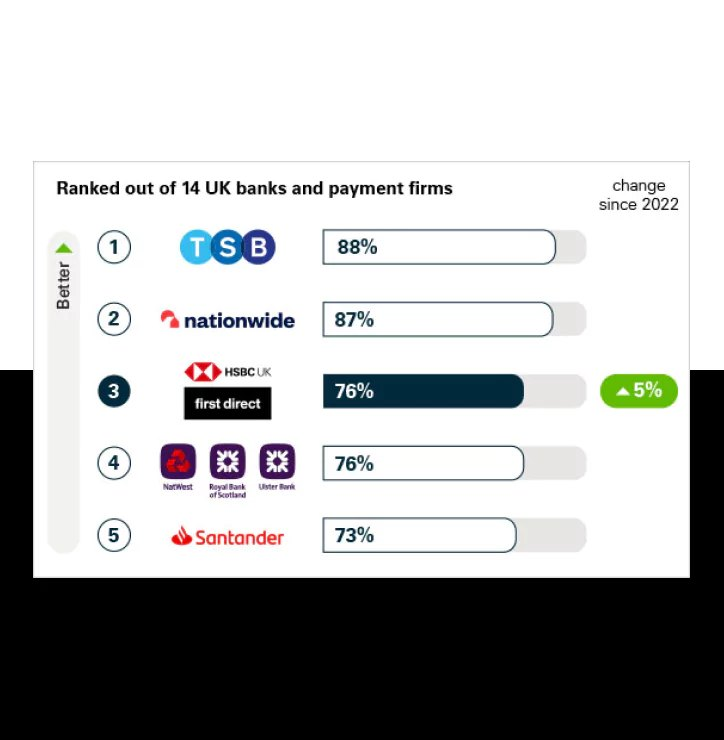

First Direct:
Banking on Trust
User Research · Journey Mapping · Trust-First Design
Banking is the one product where a confused user doesn't just bounce; they stop trusting you with their money. My job on this engagement was to be the voice of that user in every design round: run the research, map the journeys, and hold each iteration to what people actually did, not what the room assumed.
01The brief I was handed
First Direct is HSBC Group's phone-and-digital-first bank, and the brief was to lift its digital platform. The stakes weren't cosmetic. In banking, a customer who can't find something or hesitates at a payment doesn't file a complaint; they quietly start doing that task at the branch, on the phone, or at another bank. Every decision on this engagement had to pass one filter first: does this make the customer feel safer, or just look newer?
02My part
I ran the interview program. Before anything got drawn, I talked to customers about how they actually banked: what they checked daily, where they hesitated, and which moments made them abandon the screen and pick up the phone. Those calls to the phone line were the goldmine; every one marked a place the digital product had lost someone's confidence.
I turned the interviews into journey maps. The maps located the friction precisely: navigation that buried the tasks people did most, and transaction moments that felt less secure than they technically were. That second finding became the engagement's center of gravity, because perceived security turned out to be a design property, not a compliance one.
I ran the test-and-correct loop. The redesign went through iterative usability rounds: design, put it in front of users, correct, repeat. A round wasn't a demo; it was a task list. Find your last transaction. Move money to this account. Tell me when you'd feel nervous. We watched where people slowed down, what they re-read, and when their cursor hovered over the phone number, and each round's corrections came from that tape, not from the meeting after it. My job was keeping the loop honest, making sure what shipped was shaped by observed behavior rather than by the strongest opinion in the room, including mine.


The redesigned platform, and security made visible at the moment money moves, a finding that came straight out of the journey maps.
03How we shipped it
The studio's designers and engineers built the thing: navigation simplified around the tasks users actually did, layouts that held together from desktop to phone, and transaction flows where the security was visible at the moment of action instead of buried in policy. My lane was the evidence trail: every change that made it into a build could be traced back to something a user said in an interview or did in a testing session. In a bank's review process, that trail is what gets a redesign approved.
04What moved
The engagement's measured outcome:
A team shipped that number. The part that was mine: every fix that moved it started as a line in my research synthesis, and none of them started as a stakeholder's opinion.
05What it taught me
In high-stakes products, research isn't a phase; it's the safety net. And trust is a designable property: users don't read your security policy, they feel it in the flow. Holding the user's seat in rooms full of people senior to me is where I learned that evidence, presented plainly, outranks title. I've used that in every product since.